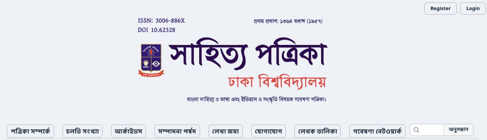
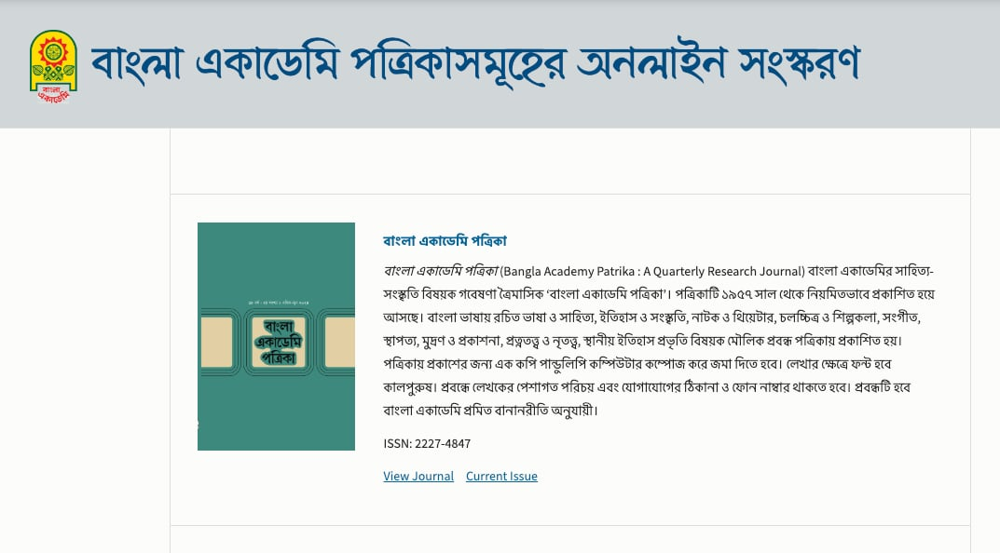
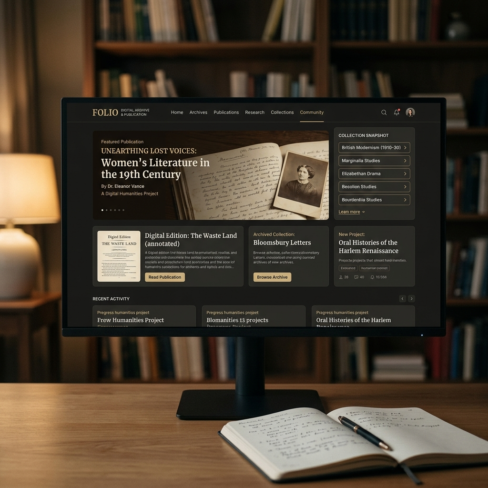

Events, conversations, and public scholarship
Media & gallery
A selection of academic events, seminars, publishing work, and media appearances.







A selection of academic events, seminars, publishing work, and media appearances.


